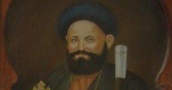

Saint Cyrille 4
Découvre l'histoire des papes de l'église copte orthodoxe.
En ce jour de l’an 1577 des martyrs (1861 après Jésus Christ) décéda le pape Cyrille (Kyrellos) IV le 110ème patriarche de la prédication de saint Marc. Ce pape est surnommé le père de la réforme. Il naquit dans le village d’al-Sawamaa oriental des dépendances d’Akhmîm en 1815 après Jésus Christ. Son père s’occupa activement de son éducation religieuse. Il grandit dans la vertu et la piété et souhaita devenir moine. Il se rendit au monastère de saint Antoine et s’y enrôla sous le nom de David. Sa bonne réputation conduisit abba Pierre al-Gawli, le 109ème pape, à l’ordonner prêtre puis le nomma abbé du monastère. Dès lors, il s’occupa sans relâche de l’enseignement des moines et des affaires du monastère. Lorsqu’il y eut un désaccord dogmatique entre le métropolite d’Ethiopie et ses fidèles, le pape Pierre al-Gawli demanda à cet abbé de s’y rendre pour résoudre le problème. Ce dernier régla cette affaire à la perfection. Le pape Pierre décéda en 1852 alors qu’il se trouvait encore en Ethiopie. Après un différend qui dura un an concernant le choix du nouveau patriarche, les évêques finirent par sacrer en avril 1852 le père David al-Antouny comme métropolite général en lui donna le nom d’abba Cyrille (Kyrellos). Comme ils constatèrent qu’il gérait bien les affaires de l’Eglise, ils l’intronisèrent comme patriarche en 1854.Il se dévoua à l’éducation et l’enseignement des jeunes et institua des écoles pour les garçons et les filles. Par ailleurs il insistait particulièrement sur l’enseignement de la langue copte et les chants de l’Eglise. De plus il acheta une imprimerie qui servit à imprimer les livres liturgiques. Il se préoccupa de tous les aspects des affaires de l’Eglise. Ainsi, il fit réhabiliter l’église saint Marc à al-Azbakia au Caire. De plus, il sacra quelques évêques et visita l’Ethiopie.
Saint Cyrille IV siégea sur le trône de saint Marc pendant environ sept années et, après un dur combat, il s’endormit dans le Seigneur. Toute la nation en fut attristée et il fut enterré à la cathédrale saint Marc du Caire. L’Eglise le surnomma le père de la réforme à cause de la multitude des travaux qu’il mena.
Poser une question
Si vous avez une question, quelque chose que vous ne comprennez pas ou une suggestion pour le site informez-le en remplissant ce formulaire !